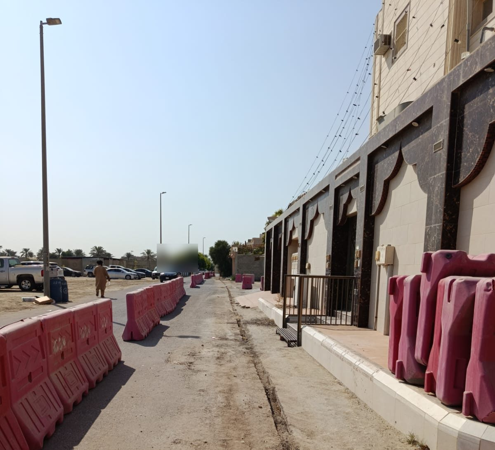
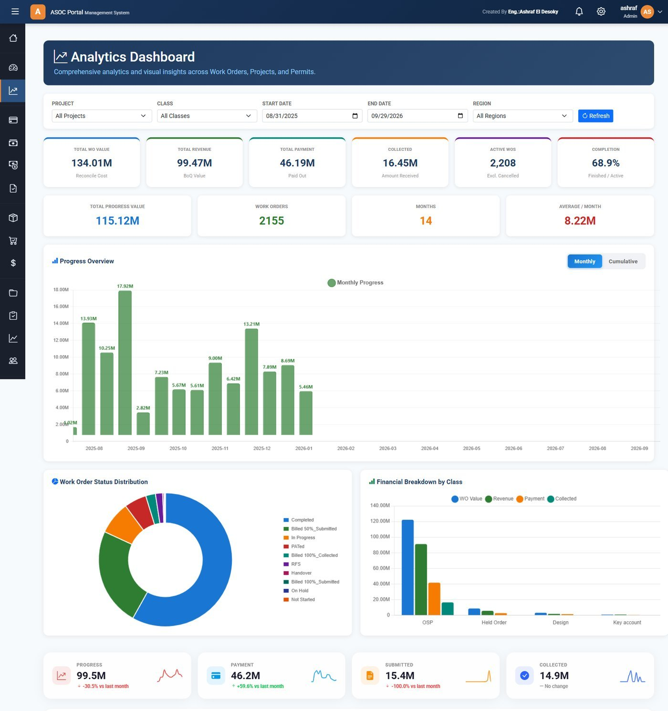

PMO Leadership & Programme Governance
Create the governance, reporting and control structure needed to manage complex programmes.
Discuss Your ProjectCommon programme challenges
Fragmented reporting
Every project reports differently; consolidation is manual and slow.
Unclear ownership
Decisions stall because accountability is not defined.
Inconsistent KPIs
Metrics differ across projects and cannot be compared.
Poor change visibility
Scope and impact changes surface after the damage is done.
Weak risk escalation
Risks reach leadership too late for effective intervention.
No single programme view
Management cannot see the whole programme at a glance.
PMO capabilities I put in place
PMO Setup & Governance
PMO mandate, roles, processes, templates and governance boards.
Portfolio & Programme Reporting
Consolidated reporting cycles focused on exceptions and decisions.
KPI Framework
KPIs with clear ownership, targets, data sources and review frequency.
Executive Dashboards
Decision-ready dashboards summarising programme health.
Risk Management
Escalation paths and registers that surface risk early.
Change Control
Formal change processes with impact assessment and approval gates.
Baseline Management
Approved baselines for scope, schedule and cost — controlled change.
Stakeholder Reporting
Tailored reporting for executives, boards and delivery teams.
From project data to executive decisions
Projects
Delivery data & status
Data
Consistent collection
PMO Control
Consolidation & analysis
Governance
Review boards & gates
Executive Reporting
Decision-ready packs
Decision
Accountable actions
PMO leadership at programme scale


STC National FTTH Programme PMO
Developed KPI dashboards, executive reporting and governance rhythms for one of the region's largest telecom infrastructure programmes.
Custom ERP & Tracking Systems
Built MS Access VBA and SQL systems for project tracking, materials management and programme data across large teams.
Multi-System Programme Governance
Led delivery governance across ELV, BMS, CCTV, Fire Alarm and FTTH workstreams for a national prestige project.
Need a PMO or governance framework that supports real decisions?
Let's discuss how PMO leadership and programme governance can give your programme visibility and control.
Discuss Your Project